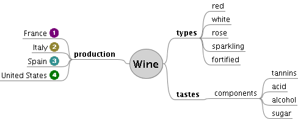

FreeMind 快速上手：九个问题答完就知道要不要装
整理一篇关于 FreeMind 的快问快答——它是什么、谁用、怎么装、核心键位、常见坑、与同类对比、要不要付费、长期持有还行不行。
整理一篇关于 FreeMind 的快问快答。这款老牌开源导图工具在 SourceForge 上曾经是下载量破六百万的明星项目，今天还值不值得装？下面九个问题直接给结论。
FreeMind 到底是什么？
一款用 Java 写的、专门画思维导图的桌面软件，官网上有完整的功能说明。想法从中央根节点出发，沿着连线向四周分叉生长，界面基于 Swing，任何装了 Java 运行环境的系统（Windows、macOS、Linux）都能跑。它以 GNU GPL V2+ 许可发布——个人随便用、公司内部随便用，不收费、不限用途。
谁需要它？
两类人：一类是不想给导图软件掏钱的人，市面上主流商业工具年费动辄几百元，这款完全免费且格式开放；另一类是喜欢键盘操作的人——它的设计哲学就是让手不离开主键区就能完成 90% 的建图动作，回车、Insert、F2 三个键的固定分工练熟之后，建图速度比靠鼠标点点点的工具快一大截。
反过来说，需要在线协作、云同步、多人共享导图的人可以直接跳过——它的协作能力几乎为零，数据全部本地。
怎么装？
核心前提只有一个：装 Java 运行环境（JRE）。Windows 和 macOS 用户从官方下载拿安装包一路下一步就行，Linux 用户有两条路：发行版仓库里有现成包（Debian、Ubuntu 的包管理器搜 freemind 就能找到），或者下官方通用 zip 包自己解压，解压后运行 freemind.sh 脚本启动。精简版约 29 MB，完整版约 38 MB，体积很小。
装好之后建一张单节点小图敲一下 Ctrl+S，文件能正常弹对话框落盘就是装好了。
核心操作怎么记？
三个键就够：
- 回车（Enter）：在当前节点下方新建同级兄弟节点——连续敲就是连续列要点，和写大纲一个手感。
- Insert：为当前节点新建下一级子节点——想往深处展开层级就找它。
- F2：回头修改当前节点的文字（新建时直接敲字就能编辑，F2 用于改老节点）。
方向键在节点间移动焦点，空格键折叠/展开子树，Esc 焦点跳回根节点。更多快捷键和进阶操作可以翻freemind文档查阅。这套连招练五分钟就能形成肌肉记忆，手不离键盘图就长出来了。

最容易踩的坑是什么？
Java 环境装串了。典型症状：建图编辑一切正常，一按保存或另存为就没反应——文件对话框根本弹不出来。原因是电脑里同时装了 JDK（开发套件）和 JRE，程序调图形组件时找错了对象。修法两条：把 JAVA_HOME 环境变量从 JDK 目录改指到 JRE 目录，或者直接改安装目录里的启动脚本，把 java 命令换成 JRE 的绝对路径。
还有一个小坑：版本停滞。官方稳定版定格在 2014 年的 1.0.1，预览版停在 2016 年的 1.1.0 Beta2。软件本体不再更新，但它保存的 .mm 格式至今仍被大量工具支持，社区分支 Freeplane 一直在演进。
要不要付费？
不用。GNU GPL V2+ 许可下，个人使用和公司内部使用都完全免费。唯一的约束是如果你基于它的代码做二次开发，成果也要开源——这对绝大多数只用来画图的用户来说完全不是问题。
和同类工具比怎么样？
和商业导图软件比：功能更全但收费且格式封闭，FreeMind 胜在免费、开放格式和键盘速度；和浏览器端导图工具比：免安装但离线不可用，数据握在服务商手里，FreeMind 胜在完全离线、数据完全自己掌控；和社区分支 Freeplane 比：FreeMind 更精简、更接近"原版体验"，Freeplane 功能更丰富但界面也更复杂。
短板也要说清楚：界面风格偏陈旧，协作能力几乎没有，不支持云同步，需要自己维护 Java 环境。
今天还值得装吗？
值得，但要带着正确的预期。如果你需要的是"打开就能本地快速画导图、文件格式开放不被锁定、一辈子不花钱"——它依然是很好的轻量选择。如果你需要在线协作、多人编辑、云同步——它从设计上就没考虑过这些场景，装了也用不起来。
最后一句
一款"够用且免费"的经典工具，不需要在线协作、只想本地快速画图的人装一个不亏——装之前先确认自己电脑上的 Java 环境没串。关于它的 .mm 格式兼容和社区分支演进，源码和手册在 GitHub、Gitee、GitCode 三个仓库都能拿到，国内访问走 Gitee 或 GitCode 会更顺畅。